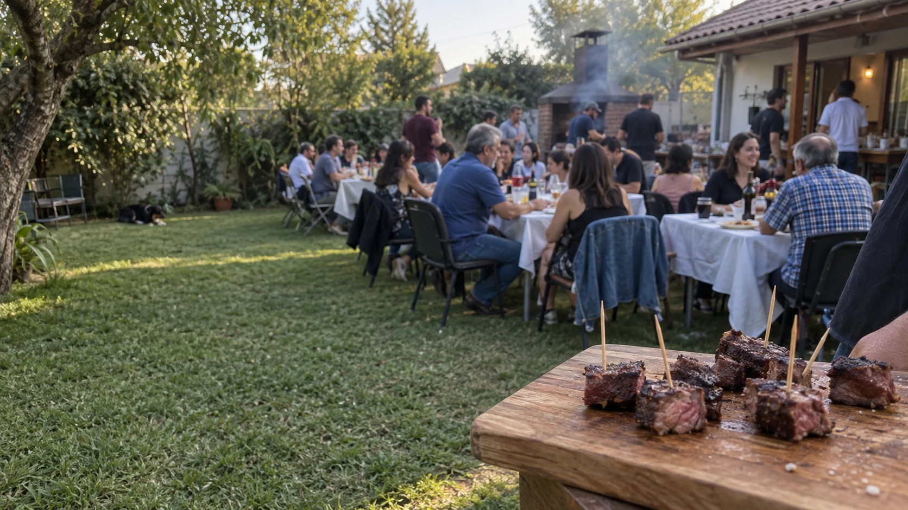
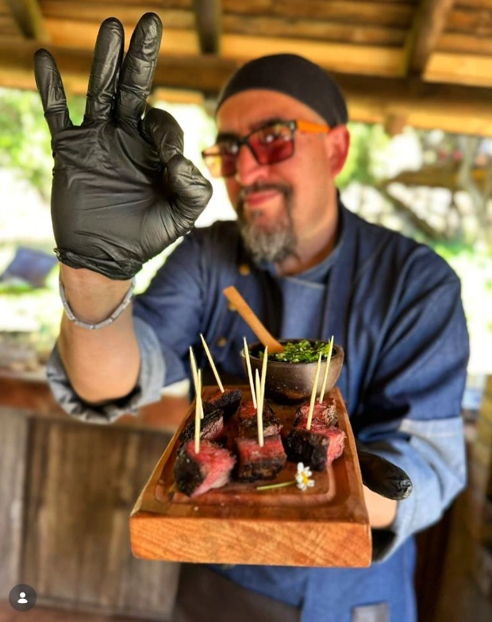

Malaya a la pizza
Queso, tomates y albahaca sobre la parrilla.


Catering integral para eventos
Comida, parrilla, bocados, bebestibles y un equipo a cargo. Tú te dedicas a disfrutar.
Una mesa familiar, un matrimonio o una jornada de empresa. La propuesta parte por tu ocasión.
Nos encargamos de la cocina y de hacer que el servicio funcione, de principio a fin.
Llegamos al espacio dispuesto por el cliente. No proporcionamos recinto.
Cortes y bocados de nuestra cocina.
La selección final se acuerda para tu evento.
Queso, tomates y albahaca sobre la parrilla.
Carnes, mariscos y vegetales al disco.
Pequeñas porciones para compartir.
Un clásico de la parrilla, en un bocado.
Corte a la parrilla, servido en tabla.
Asados con queso y champiñones.
Dorada por fuera, jugosa por dentro.
Queso, tomate y albahaca.
También preparamos ceviches. Cuéntanos qué te gustaría incluir y conversemos la propuesta.
Más preparaciones en InstagramComencemos por los invitados. Te proponemos el menú y el formato de servicio para tu encuentro.
Elige una cantidad para preparar tu consulta. Menú, cantidades y valor se cotizan a medida.
Consultar un menúFecha, lugar, invitados y tipo de celebración.
Menú, bebestibles, montaje y condiciones por escrito.
Acceso, espacio de trabajo y horarios de llegada, servicio y retiro.
El equipo se ocupa del montaje, la cocina y la operación acordada.

Diego Sandoval · Yeyo
Diego Sandoval es la cara de Parriyeyo y el experto al mando de la parrilla.
Lo acompaña un equipo que hace posible la comida, los bebestibles, el montaje y la operación. El servicio lo hacemos juntos.
Hablemos de tu eventoIndícanos la comuna o ciudad de tu evento para revisar disponibilidad y traslado.
¿Macul u otra comuna de la Región Metropolitana? ¿Viña del Mar, Rancagua u otra ciudad?
Consultemos tu ubicación. La cobertura y las condiciones de traslado se confirman en la cotización.
Consultar mi ubicaciónCuéntanos cuándo, dónde y cuántos serán.
Prefiero escribir por InstagramNo. El cliente dispone el recinto y el equipo llega a prestar el servicio acordado.
Los horarios de llegada, montaje, servicio y retiro se coordinan según el lugar y el formato de tu evento, y quedan definidos en la propuesta.
Completa el formulario y copia el mensaje preparado. Luego compártelo por mensaje directo con @parriyeyo en Instagram para conversar sobre disponibilidad y propuesta.
Claro. Cuéntanos tus preferencias y si hay restricciones alimentarias. Las preparaciones y condiciones se acuerdan directamente para tu evento.
Indica la comuna o ciudad, la cantidad estimada de invitados y cómo es el espacio. Así podemos revisar contigo la logística y lo necesario para la parrilla.